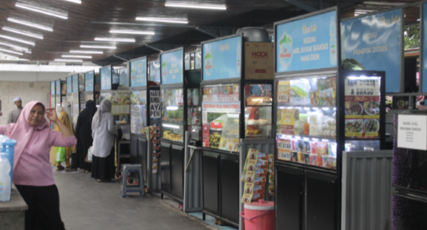
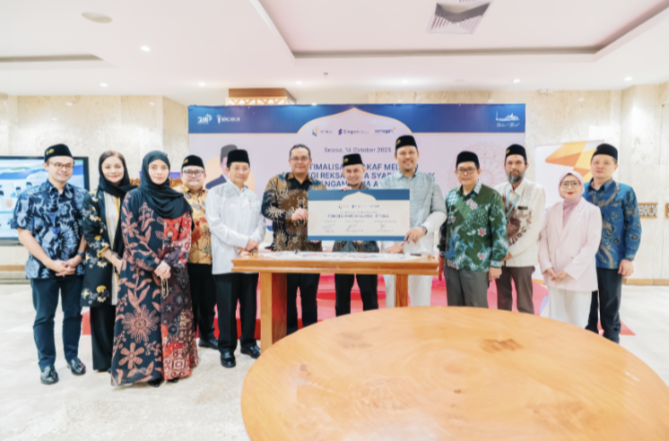

Kegiatan

IGF Food & Craft
IGF Food & Craft Masjid Istiqlal yang telah resmi menjadi Kawasan Zona KHAS (Kuliner Halal, Aman dan Sehat) pada Jumat, 22 Desember 2023 untuk memberi kenyamanan dan keamanan bagi masyarakat yang berkunjung di Masjid Istiqlal
Baca Lanjut
Dana Abadi Istiqlal (DAIS) Melalui Fitur Reksadana
Kegiatan festival seni dan bazaar dalam rangka perayaan Idul Adha yang melibatkan komunitas kreatif dan pelaku UMKM.
Baca Lanjut
Rapat Kerja IGF
Pertemuan tahunan untuk membahas strategi, program kerja, dan kolaborasi yang akan dilaksanakan oleh IGF.
Baca Lanjut